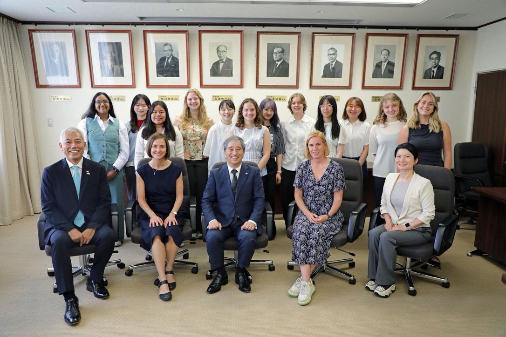

Sarah Barnes Haddix
Links
News
- On the Necessity of Real-Time Principles in GPU-Driven Autonomous Robots (link), Syed W. Ali, Angelos Angelopoulos, Denver Massey, Sarah Haddix, Alexander Georgiev, Joseph Goh, Rohan Wagle, Prakash Sarathy, James H. Anderson, Ron Alterovitz accpeted at ICRA, 2025.
- I have been selected to participate in UNC's Undergraduate CyberSecurity Engagement Program and will be traveling to Nagoya University in Japan at the end of the 2025 spring semester.
About Me
I am a student at the University of North Carolina at Chapel Hill. I'm currently earning a B.S. in Computer Science and a B.S. in Mathematics. I work as an undergraduate reserach assistant at UNC's Real-Time Systems Lab under Department Chair James H. Anderson, where I have mainly worked on projects concerning real-time principles in robotics and AI. I am currently working on projects having to do with real-time bounds on GPU-enabled applications. I am an incoming summer 2025 intern at Owl Cyber Defense, where I'll be working on cross-domain network security for US government applications. I'm also currently working on a project to formally verify certain security properties of cryptographic protocols proposed in this paper by researchers at UNC. To see more of my current and past projects, be sure to check out my Github.
I'm interested in going to graduate school to learn more about (real-time) operating systems, distributed systems, network security, formal methods, compilers, and programming languages.
Outside of school, I enjoy snowboarding (I am a member of the UNC ski/snowboard team), going to the gym, bouldering, playing video games (mostly Destiny 2 and Nier Automata right now), reading (mostly Dune), and learning French. I am also the Co-President of UNC's AWM (Association for Women in Mathematics) Chapter and a member and of a club called TOPICS (Talking Over Papers in Computer Science), a reading group for undergrauate women in computer science. I also manage the TOPICS website.
Pictures
